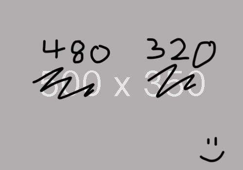
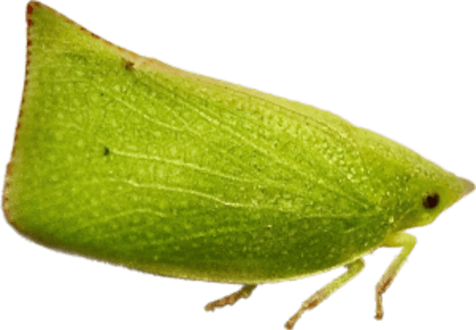
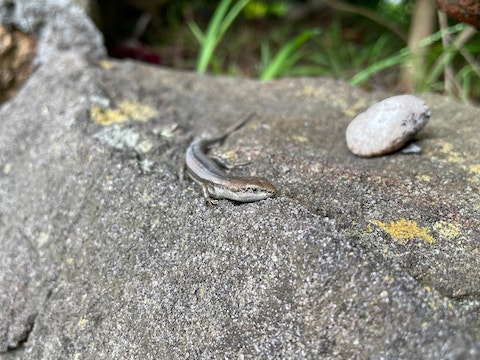

Super Nature World

Thank you for visiting our homepage.
This is not Fish Tank World or Channel Chirp.
Bookmark this page now to enjoy future updates.
Super Nature World now has a YouTube Channel here.
Favourite Creatures

Cicada
What's that noise? Probably cicada! Note: Above is not a cicada.

Lizard
Lizards and skinks are cool.
Not Fish
This is not a page for fish.
Not Bird
This is not a page for birds.
This page has had
 visitors since January 2022.
visitors since January 2022.Powered by the McRetro Network.